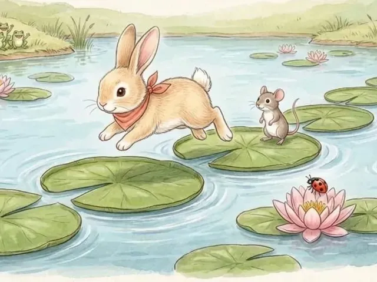

Children's books made for every kind of reader
Story books, activity books and colouring books created by Tania Jacobs, a teacher and mum who knows that some children learn differently, and that every one of them deserves to love books.
Browse the books Read free stories- Dyslexia-friendlyClear fonts, calm pages, room to breathe.
- Made by a teacherShaped by years in the classroom.
- Kind storiesGentle, warm and inclusive.
- Instant downloadsPrint at home or in class.
Find the right book
Every book sits in one clear shelf, so you can find what you need quickly.
Story Books
Picture books and longer reads to enjoy together.
Handwriting and Pencil Control
Tracing, pencil control and scissor skills.
Bilingual Editions
Spanish, Italian and Japanese with English.
Maths and Puzzles
Riddles, word searches and focus games.
Fun Facts and Learning
Dinosaurs, oceans, seasons and our planet.
Colouring Books
Calm, creative pages to colour and keep.
Seasonal and Holidays
Christmas, Easter, Valentine's and autumn.
Faith Books
Bible verses and nativity stories.
Planners and Trackers
Homework and reading trackers.
The bookshelf
Choose a shelf, or browse everything.
Free stories on Tansley Tales
Our sister site, Tansley Tales, has free stories to read together or watch read aloud. Every story has a dyslexia-friendly version, so no reader is left out.
Visit Tansley Tales



About Tania Jacobs
I'm Tania, a teacher, a children's author and a single mum. My own child learns differently, and watching homework turn into tears taught me something important: when a book is hard to read, children start to believe they are the problem. They aren't.
Tansley Express is where I share books made the way I wish more books were made. Clear, calm pages. Stories with heart. Characters every child can see themselves in. Whether your child is a confident reader or still finding their way, there is a place for them here.
Thank you for being part of this little corner of the world.
Tania
Get in touch
Questions about a book, a download or using our books in your school? I'd love to hear from you.
Email tansleyexpress@gmail.com